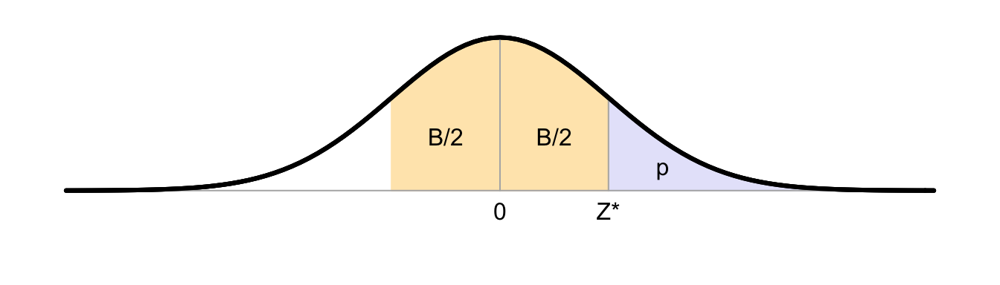

B Standard normal probability distribution

The critical value \(Z^*\) given below has a probability of \(p\) under \(H_0\), i.e., \(P(Z > Z^*|H_0)=p\) (the blue area), and it has a probability of \(B\) to have a value in the interval \((-Z^*, +Z^*)\) (the yellow area). The \(Z\) distribution is symmetrical around \(Z=0\), hence \(P(Z < -Z^*) = P(Z > Z^*)\).
The first table reports the critical boundary values \(Z^*\) for some frequently used probabilities of \(p\) and frequently used confidence intervals of \(B\):
| p | 0.2 | 0.1 | 0.05 | 0.025 | 0.01 | 0.005 | 0.0025 | 0.001 |
|---|---|---|---|---|---|---|---|---|
| B | 60% | 80% | 90% | 95% | 98% | 99% | 99.5% | 99.8% |
| Z* | 0.8416 | 1.282 | 1.645 | 1.960 | 2.326 | 2.576 | 2.807 | 3.090 |
The second table reports the probabilities \(p\) and confidence intervals \(B\) voor some frequently used critical values of \(Z^*\):
| p | 0.3085 | 0.1587 | 0.0668 | 0.0228 | 0.0062 | 0.0013 | 0.0002 |
|---|---|---|---|---|---|---|---|
| B | 38.29% | 68.27% | 86.64% | 95.45% | 98.76% | 99.73% | 99.95% |
| Z* | 0.5 | 1 | 1.5 | 2 | 2.5 | 3 | 3.5 |